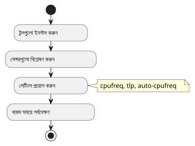
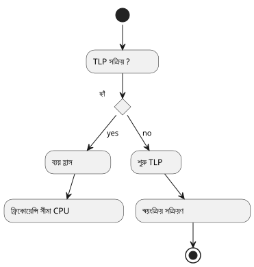
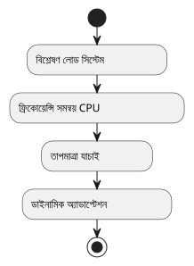

Ubuntu-এ আপনার ল্যাপটপের তাপমাত্রা ঠাণ্ডা ও পর্যবেক্ষণ করুন
প্রকাশিত: 15 July 2025
আপনি মনে করেন আপনার ল্যাপটপ উবুটুতে অস্বাভাবিকভাবে গরম হচ্ছে? এই আর্টিকেল আপনাকে একটি পদ্ধতি প্রস্তাব করে।সফটওয়্যারসম্পূর্ণ untukশীতল করা, পর্যালক্ষণ করা et তাপমাত্রা নিয়ন্ত্রণ করাআপনার মেশিনের
এই গাইডের লক্ষ্য
-
কম্পিউটেরের সমগ্রিক তাপমাত্রা ক manners?
-
শক্তি ব্যবস্থাপনাকে অপ্টিমাইজ করা
-
আलोचनামূলক উপকরণ (CPU, GPU, ইত্যাদি) পর্যবেক্ষণ করুন
-
এর કારেনে বিলম্ব এẏiareঠার্মাল থ্রটলিং

প্রাকশর্ত
-
একটি উবুন্টু মেশিন (২০.০৪ বা উচ্চতর সংস্করণ সুপারিশ করা হয়)
-
ইন্টারনেট সংযোগ
-
কমান্ড লাইনের দক্ষতা (শুরু থেকে মধ্যম)
টুলসকে ইনস্টল এবং কনফিগার করুন
lm-sensors` সেন্সরগুলো সনাক্ত করার জন্য
sudo apt install lm-sensors
sudo sensors-detect
sensors|
উত্তর দিন`YES`সব প্রশ্নের`sensors-detect`মডিউলগুলো সনাক্ত করার জন্য। |
tlp : gestionnaire d’énergie intelligent
sudo apt install tlp tlp-rdw
sudo systemctl enable tlp
sudo systemctl start tlp
cpufrequtils` : CPU গতিসীমা করা
sudo apt install cpufrequtils
cpufreq-info
sudo cpufreq-set -g powersave-
powersave: ফ্রিকোয়েন্সির শिखর সীমিত করতে -
performance: শক্তি তাপমাত্রার هزینهে উন্নীত হয়
auto-cpufreq` : সরলীকৃত গতিশীল व्यवस्था
git clone https://github.com/AdnanHodzic/auto-cpufreq.git
cd auto-cpufreq
sudo ./auto-cpufreq-installer
sudo auto-cpufreq --install
thermald` : স্বয়ংক্রিয় তাপমাত্রা সুরক্ষা
sudo apt install thermald
sudo systemctl enable thermald
sudo systemctl start thermaldবাস্তব সময়ের নিগরানী
sensors` কমান্ড লাইনে
watch -n 2 sensorsGUI অপশন : `psensor
sudo apt install psensorCPU, GPU, পंखার জন্য সরল গ্রাফিক্যাল ইন্টারফেস।
অতিরিক্ত টিপস
-
ট্যাব এবং ভারী অ্যাপস বন্ধ করো (উदাহরণ: 브라우জার)
-
ব্যাটারি চালানোর সময় ভারি ব্যবহার এড়িয়ে চলুন
-
প্রক্রিয়া নিরীক্ষণ mediosse`htop`:
sudo apt install htop
htopসিস্টেমটিকে পরিষ্কার করে অতিভার সীমাবদ্ধ করুন।
sudo apt autoremove
sudo apt autoclean
sudo journalctl --vacuum-time=3dআगे বাড়তে
আপনি একটি পরিষেবা তৈরি করতে পারেন`systemd`কাস্টমাইজড কিছু সেটিংস স্বয়ংক্রিয়ভাবে প্রয়োগ করার জন্য আপনি পরবর্তী কোনো লেখায় একটি উদাহরণ চান? আমাকে জানাবেন!
উপসংহার
এই সরল সরঞ্জামগুলো একত্রিত করলে, আপনি লাভ পাবেন:
-
নিয়ন্ত্রিত সিপিইউ তাপমাত্রা
-
বাতাস সঞ্চালনের শব্দ কম
-
বেহतर স্বায়ত্ততা
নিয়মিতভাবে আপনার তাপমাত্রা পর্যবেক্ষণ করবেন যাতে অতিরিক্ত গরমি থেকে রক্ষা পেতে পারেন।
(No content) সঠিক সতর্কতা বজায় রাখা ভালো, প্রসেসর গলান না হওয়াতে। __